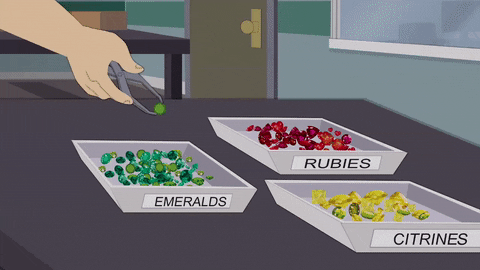

A sorting algorithm is an algorithm that puts elements of a list in a certain order. The most frequently used orders are numerical order and lexicographical order. Efficient sorting is important for optimizing the efficiency of other algorithms (such as search and merge algorithms) that require input data to be in sorted lists. Sorting is also often useful for canonicalizing data and for producing human-readable output. More formally, the output of any sorting algorithm must satisfy two conditions:
1.The output is in nondecreasing order (each element is no smaller than the previous element according to the desired total order).
2.The output is a permutation (a reordering, yet retaining all of the original elements) of the input.

Sorting Algorithms
While there are a large number of sorting algorithms, in practical implementations a few algorithms predominate. Insertion sort is widely used for small data sets, while for large data sets an asymptotically efficient sort is used, primarily merge sort, or quicksort.For more restricted data, such as numbers in a fixed interval, distribution sorts such as counting sort or radix sort are widely used. Bubble sort and variants are rarely used in practice, but are commonly found in teaching and theoretical discussions.
Some commonly used sorts are:
1.Bubble sort
2.Selection sort
3.Insertion sort
4.Merge sort
5.Quick sort